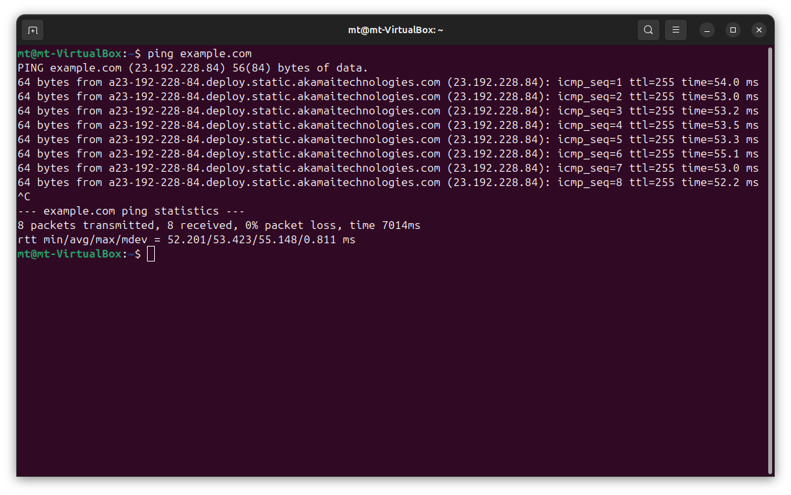
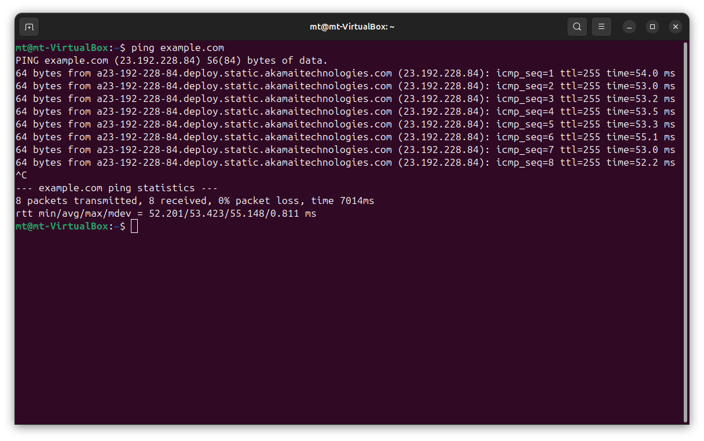
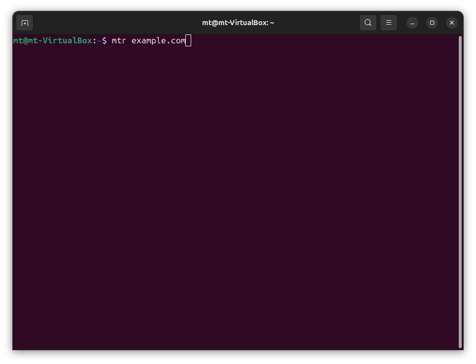

1. Ping
Testing connectivity and measuring latency:
Windows:
ping example.com
ping -t example.com
ping -n 10 example.com
ping -l 1500 example.com


Linux: ping example.com ping -c 4 example.com ping -i 0.5 example.com ping -s 10 example.com


The following outlines some Essential Network Commands used between Windows, Linux, as well as macOS.
Network commands via the Command-Line Interface (CLI) allow IT professionals to effectively diagnose, troubleshoot, and manage network connections by offering detailed insights and real-time control over network environments.
Testing connectivity and measuring latency:
Windows:
ping example.com
ping -t example.com
ping -n 10 example.com
ping -l 1500 example.com
Linux: ping example.com ping -c 4 example.com ping -i 0.5 example.com ping -s 10 example.com
Quickly retrieving network interface configurations and IP details to address network connectivity and configuration issues promptly.
Windows:
ipconfig /all
ipconfig /release
ipconfig /renew
ipconfig /flushdns


Linux: ifconfig ip a sudo dhclient -r sudo dhclient sudo systemctl restart NetworkManager


Scenarios for use:
Inspecting ARP tables to correlate IP addresses with MAC addresses:
arp -a

Benefits:
Resolving domain names to IP addresses for verifying DNS records:
Windows: nslookup example.com nslookup -type=mx example.com nslookup -type=ns example.com

Linux: host google.com host -t MX example.com host -t NS example.com dig example.com dig MX example.com dig NS example.com


Troubleshooting scenarios:
Monitoring current connections and ports:
Windows: netstat -a netstat -an netstat -b
Linux: netstat -an ss -tuln


Applicable scenarios:
Systematically analyzing the route network packets take.
Windows:
tracert google.com
Linux:
traceroute example.com

Linux (using MTR): mtr example.com

mtr also called (My Traceroute) in Linux is the network diagostic tool that combines
the functionalities of traceroute and ping.
Scenarios for use:
Comprehensive analysis of latency and packet loss.
Windows:
pathping example.com

The pathping command in Windows is a network diagnostic tool that combines the functionality of traceroute and ping
to provide detailed information about network performance to be able to identify any potential issues along the path of a network route.
Route (View routing tables):
Windows: route printLinux: route -n ip route

Hostname (View or change hostname):
Windows: hostname Linux: hostname sudo hostnamectl set-hostname new-hostname
Mastering these networking commands significantly empowers IT professionals to diagnose, troubleshoot, and optimize network environments. This guide provided practical usage and scenarios for each command, delivering crucial insights into network performance and maintenance.
Back to Home